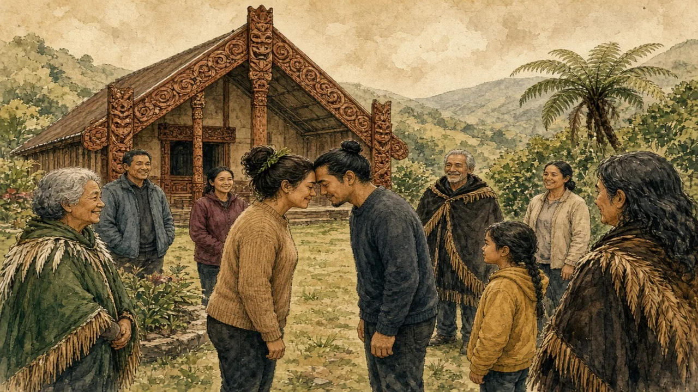

The haka is only one part of a living culture with its own language, law, media and politics — and a treaty at the heart of New Zealand's history.
Oceania · Indigenous culture · Lesson 3 of 7
🌍 World map · ← Around the World: Oceania · 🌱 Easier version (A2) · ← “No Worries, Mate”: The Real Aussie and Kiwi English · Laid-Back or Lazy? Work, Fairness and “She'll Be Right” →

Each new word is hidden in a sentence. Read it aloud and say what you think the bold word means from the rest of the sentence — then reveal it and see how close you were.
Read each part. After it, there's a quick comprehension check (try the questions from memory first), then one thing to discuss.
Many people know the haka from the All Blacks rugby team, which has performed it before international matches since the early 1900s. A haka is a vigorous chant with strong movements, performed to welcome guests, celebrate, mourn or challenge, and it expresses identity and pride. But it is one practice among many. Māori trace their ancestry to Polynesian navigators who had settled Aotearoa by about the thirteenth century, and over generations they had developed a rich culture of oratory, carving, weaving and law, organised around tribes called iwi, sub-tribes called hapū and extended families called whānau. Tattoos are also more than decoration: the traditional moko, worn on the face by some women (moko kauae) and men, carry a family history.
1. Where do many people see the haka?
2. What are iwi?
1. Performed by the All Blacks rugby team before matches.
2. Tribes.
In 1840, Māori chiefs and representatives of the British Crown signed the Treaty of Waitangi. The English and Māori versions differ on key words, especially about who held sovereignty, and disagreements over its meaning have lasted ever since. By the end of the nineteenth century, many Māori had lost most of their land through war, confiscation and purchase, and their numbers had fallen below 50,000 after epidemics. By the 1970s, children had been taught in English for generations, and fewer and fewer spoke te reo at home. In response, Māori activists had set up the first “language nests”, or kōhanga reo, in 1982, where young children learnt through immersion, and the Waitangi Tribunal, established in 1975, began to investigate claims.
1. Why did arguments about the Treaty develop?
2. What are kōhanga reo?
1. Because the English and Māori versions differ on key words, especially about sovereignty.
2. Language nests where young children learn through te reo.
Today, about one in six New Zealanders identifies as Māori, and te reo Māori has been an official language since 1987. Māori Television began broadcasting in 2004, and newsreaders, politicians and businesses use te reo more and more. Many people had never learnt the language before, but they have been studying it for years, and evening classes are full. Matariki, the Māori new year, became a public holiday in 2022. Settlements through the Waitangi Tribunal have returned land and given compensation, and many iwi now run businesses in fishing, farming and tourism. Challenges remain, including health and education gaps, and people still argue about how the Treaty should apply. The culture is not a museum piece: it is a living part of daily life.
1. When did te reo become an official language?
2. What is Matariki?
1. In 1987.
2. The Māori new year, a public holiday since 2022.
A stereotype and the reality rarely match. This lesson's grammar gives you the structure to describe the difference.
Complete each sentence about this topic.
1. By 1900, many Māori most of their land. (lose)
2. When the language nests opened, te reo already declined sharply. (decline)
3. Children in English for generations before activists acted. (learn — continuous)
1. had lost
2. had
3. had been learning
1. Polynesian navigators Aotearoa by about the thirteenth century. (reach)
2. By the 1970s, many families speaking te reo at home. (stop — past perfect)
3. The Tribunal claims for years before the first settlement was reached. (investigate — continuous)
1. had reached
2. had stopped
3. had been investigating
Hold on to this — you'll need it in the Speak tab.
Stereotypes about Māori often combine admiration and distance: the warrior, the haka, the carving. These are real and important, but they present Māori culture as a performance from the past. For people living it, culture also means speaking a language at home, running a business, studying law, raising children and arguing about politics. The Treaty of Waitangi is a good example of this: it is not a historical document that has been settled, but an agreement whose meaning is still debated in courts, parliament and on the marae. Respectful learning starts with listening to Māori voices on Māori terms.
This is the heart of the lesson — do all of it out loud. The timer is there to keep you going: fill the time with detail rather than escaping it.
Explain how Māori culture is more than the haka, as if to a friend who knows only the All Blacks. Move through the arc: the haka and what lies behind it → a treaty, a loss and a revival → a living culture.
Use today's grammar at least three times, and work in at least five key words (te reo, marae, hongi, whānau, treaty, revitalise, sovereignty, guardianship).
“Indigenous languages should be taught in every school in the country.” Discuss.
Tell a story from your own world — work, family, the news — that connects to this topic. Stuck for an idea? Pick one of these and run with it:
🌍 World map · ← Around the World: Oceania · 🌱 Easier version (A2) · ← “No Worries, Mate”: The Real Aussie and Kiwi English · Laid-Back or Lazy? Work, Fairness and “She'll Be Right” →